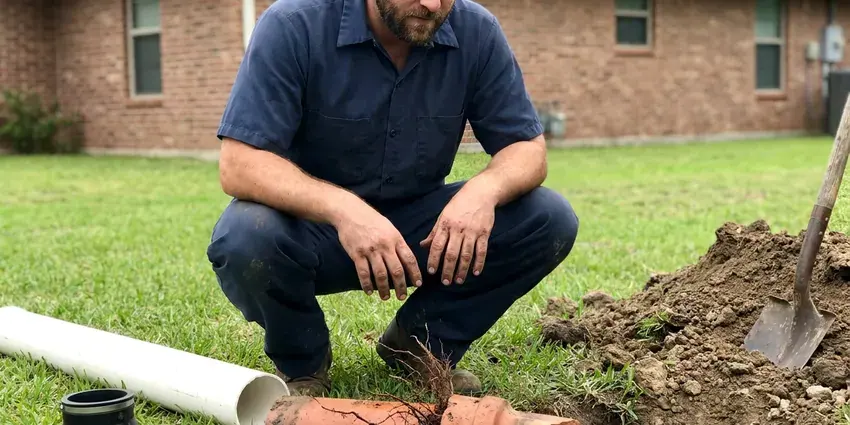

Foundation Leak Repair in Palm Bay, FL
Cracks in the floor, damp baseboards or a meter that won't sit still? We locate and repair plumbing leaks under foundations in Palm Bay, FL.
- Serving Florida Homeowners
- PEX Reroutes Overhead
- Spot Repairs Through Concrete
- Pressure Testing on Every Call

Plumbing Leak Under Your Foundation? Get It Fixed in Palm Bay, FL.
Call today and we will locate the leak and explain whether a direct repair or a reroute makes more sense.
Foundation Leak Repair in Palm Bay, FL
HDF Plumbing sees the same pattern in Palm Bay homes year after year. A high water table across much of Florida affects drainage, septic design, and how deeply crews can dig for underground repairs. We test the lines, find the break and fix it with a spot repair or a reroute. Most homes are back to full water the same day or the next, and you always get the price in writing before we start any of it. Short jobs, mostly.
Our expertise includes:
- Direct repairs through concrete with careful patching and compaction
- Electronic and acoustic leak locating beneath slabs and stem walls
- Exterior grading and drainage fixes

Additional Plumbing Repair Services in Palm Bay, FL
We offer expert plumbing repair services across Palm Bay, FL to fix leaks, restore flow, and keep your system running smoothly.


Customers
Why Choose HDF Plumbing for Foundation Leak Repair in Palm Bay, FL?
Leaving a slab leak alone lets the soil keep soaking, and that is when you start seeing mold behind baseboards and cracks in tile. We get it found and stopped, then repair or reroute the line usually within a few days.
- Repairs That Hold, We use code-approved fittings and proper bedding sand so the repaired section holds up under soil movement.
- Foundation Know-How, HDF Plumbing works on slab, stem wall and crawl space homes across Florida, and each one leaks in its own way.
- Accurate Locating, We find the break first, so the concrete opening stays as small as possible.
Citywide Coverage
No part of Palm Bay is outside our service area. Local builders had habits, and we've learned them. HDF Plumbing usually schedules leak detection within a day or two, with spot repair parts on board, so straightforward leaks are often fixed on that first trip.
Experienced Team
Our plumbers have opened a lot of slabs in Florida homes. They train on new locating gear each year. That includes updated ground microphones, thermal cameras and tracer gas rigs, because the better the locating, the smaller the hole in your floor.
Safety-First Approach
Cutting a slab means dust, noise and a saw blade near buried lines. We wet-cut to control dust. We scan for cables, rebar and conduit before cutting and set the area up so the slab and the crew stay unharmed. Palm Bay code applies throughout.
Trusted Certified Palm Bay Plumbing Services Professionals
At HDF Plumbing, we are proud to offer certified plumbing services throughout Palm Bay, FL. Those papers on the wall mean something. Every repair, install and maintenance visit follows strict safety and quality rules, and the plumbers doing the work carry recognized industry credentials.
Call Us Now PHCC Plumbing Contractor Recognition
PHCC Plumbing Contractor Recognition Better Business Bureau (BBB) Accreditation
Better Business Bureau (BBB) Accreditation Angi Certified Pro
Angi Certified Pro ISO 9001 Quality Management Certification
ISO 9001 Quality Management CertificationLocating and Fixing Foundation Leaks in Palm Bay, FL
Foundation Leak Repair Cost Comparison in Palm Bay, FL
Direct repairs usually cost least up front. Flooring adds to it. A reroute costs somewhat more but avoids concrete work and future leaks in the abandoned pipe, and a repipe fits homes that have already leaked more than once. We compare total costs, flooring and drywall included.

Emergency Foundation Leak Service in Palm Bay
A main line that splits under the slab can push water up through grout lines within hours. Close the main valve right away. HDF Plumbing sends a crew to Palm Bay to isolate the broken line, cap it off so the rest of the house still has water, and then plan the full repair, often the next day.
Residential Foundation Leak Repair in Palm Bay, FL
For a homeowner in Palm Bay, FL, the first question is usually how bad it is. A pressure test answers it. If the gauge drops fast, the leak is large and needs attention this week, but a slow drop over twenty minutes points to a pinhole that gives you time to compare repair options. We also look for the cause, whether it is corrosion, soil movement or a poor joint.
Direct Foundation Leak Repair in Palm Bay, FL
Direct repair means cutting into the floor right over the leak. It's usually the lowest bid. We saw a small opening, dig down to the pipe, replace the damaged section and pressure test it, then backfill in layers and patch the concrete flush with the floor around it. Your flooring contractor can finish the surface afterward.
Emergency Foundation Leak Repair in Palm Bay
A burst pipe under the slab can flood a room before you find the main valve. Know where your shutoff is. HDF Plumbing responds in Palm Bay to shut the line down, find the break and repair it on that first visit if we can get to it safely. Until then, a cap on the bad line keeps the rest of the house in water.
Water Line Reroute in Palm Bay
A reroute leaves the old pipe under the slab and runs new line through the attic or walls. No concrete gets broken. We usually run PEX because it bends around framing and does not corrode, and the drywall openings are cut small, often just a few squares at fixture walls, so patching goes fast.
Same-Day Foundation Leak Response in Palm Bay, FL
A large leak under the slab can flood floors and soak the ground fast. Turn off the main. We walk you through the shutoff over the phone, send a crew to locate the break, and isolate that line so the kitchen and bathrooms still have water while we plan the repair.

Pricing Foundation Leak Repairs in Palm Bay, FL
Price depends on where the leak sits and what is on top of it. Tile costs more to open. Once the leak is found, you get one written price for a spot repair and one for a reroute, patching included, so the comparison is fair. That holds for every Palm Bay, FL job.
Foundation Leak Repair Near Me in Palm Bay, FL
People searching for foundation leak repair near me tend to have a warm floor, a wet spot or a spike in the water bill. We can be there quickly. Before we pack up, you will know where the leak is, what each repair would involve and what each would cost.
Searching 'foundation leak repair near me' in Palm Bay, FL usually means something feels wrong underfoot. HDF Plumbing covers the whole area and knows which subdivisions were plumbed with soft copper under the slab and which went with PEX. It speeds up the diagnosis.
HDF Plumbing at a Glance
- Licensed and insured plumbers serving Palm Bay, FL
- 24/7 emergency service with same-day scheduling
- Clear written estimates, no hidden fees
- 4.9-star rated by 739+ Florida customers
Palm Bay Map
Palm Bay Information
- Population
- 135,566
- Area codes
- 321/772/407
- Service area
- Palm Bay and communities within 40 miles
- Nearby
- Melbourne, St. Cloud, Titusville, Orlando
Soil under a house swells or washes out when a hidden line soaks it, which is how a pinhole under a foundation in Palm Bay, FL turns into cracked concrete and sticking doors.
Expert Services
Reach out to HDF Plumbing for reliable plumbing work done by licensed pros in Palm Bay, FL.
Our Specialized Plumbing Services in Palm Bay, FL
At HDF Plumbing, you get every kind of plumbing service from one company across Palm Bay, FL. We go from leak detection all the way to full system installations, for homes and commercial buildings, and we do it quickly at a fair price. Here are the core services we offer:


What to Expect From Foundation Leak Repair in Palm Bay, FL
Here is how a foundation leak job typically goes in a Palm Bay, FL home, from the first call to the patched floor.
Request a Quote
Call (904) 925-7356 and tell us what you see, like warm floors, new cracks or a meter that keeps turning. Leak detection gets scheduled fast.
Detect and Plan
We isolate and pressure test the lines, locate the leak and lay out a spot repair and a reroute. Each one gets a written price.
Repair and Verify
The repair gets done and the line is pressure tested again. We patch the concrete or close the walls and verify the leak has stopped.
Frequently Asked Questions About Foundation Leak Repair in Palm Bay
Leak detection typically costs $150 to $450. Repairs vary more. Direct repairs through concrete usually range from $1,500 to $4,000, and reroutes often run $1,800 to $5,000 depending on the length of the new line and how hard the walls are to get into. Full repipes get their own quote.
Big cracks, sticking doors or sloping floors are reasons to call one. We fix the plumbing first so the soil has a chance to settle.
A hairline crack in a basement wall can sometimes be sealed with a store-bought kit. Plumbing leaks are different. A repair that is done wrong can soak more soil, cost more to redo and fail local code, so anything involving a pipe under the floor or a structural crack should go to a licensed plumber or engineer.
Look for wet spots on floors or walls, mildew smells and standing water around the foundation. The bill usually goes up. Cracks in the foundation or interior walls that widen over a few months also point to a leak changing the soil, so have the plumbing tested before you call a foundation repair company.
Probably not, and it isn't worth trying. Finding it takes special tools. It takes listening equipment, a test rig, a concrete saw and joints that hold for decades under soil. A missed spot means a second hole in your Palm Bay floor.
Direct repair works well for one leak in otherwise sound pipe. Reroutes suit older pipe. If the copper is thin, the slab is post-tensioned or the leak sits under something you don't want cut, rerouting through the attic usually makes more sense, and we price both so you can compare.
Damp or warm floor spots, cracked tile, mildew under carpet and a meter that turns with every fixture off are the classic signs. A jump in the water bill is often the first clue.
Locating the leak typically takes one to three hours. The repair itself, direct or reroute, usually takes one to two days.
What Our Customers Say About Our Plumbing Experts

Greg S.
I manage a small strip center with six tenants. HDF Plumbing handles our annual backflow testing and fixed a recurring clog in the shared sewer line that had been backing into the nail salon. Their reports come in clean and on time.
Commercial Plumbing · Alafaya, FL
Nathan E.
Our tankless heater kept throwing an error code and shutting off mid shower. The tech flushed the heat exchanger, which was full of scale, and replaced a bad flow sensor. Hot water has been steady for half a year now.
Water Heater Repair · Melbourne, FL
Megan L.
Our upstairs tub drained so slowly that every shower turned into a bath. HDF Plumbing pulled a wad of hair out of the stopper and then snaked the line past the trap. Three months later it still drains fast.
Drain Cleaning · St. Cloud, FL
Jessica T.
We were adding a gas range in a kitchen remodel and needed a new line run from the meter. The plumber pulled the permit, ran the pipe through the crawl space, and had it inspected and approved within the week.
Gas Line Repair · Melbourne, FL
Angela D.
Our sump pump quit during a storm and the water was an inch from the basement carpet. HDF Plumbing put in a new pump with a battery backup that same evening. We have had two heavy rains since. It kicked on both times.
Sump Pump · Melbourne, FL
Kevin O.
Before buying our house I paid for a sewer camera inspection. HDF Plumbing found a belly in the line that held standing water about forty feet from the cleanout. We used the video to get the sellers to fix it before closing.
Sewer Camera Inspection · Palm Bay, FL